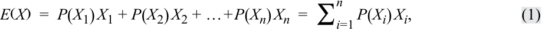
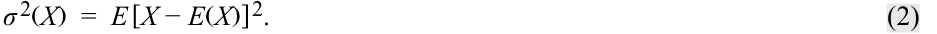
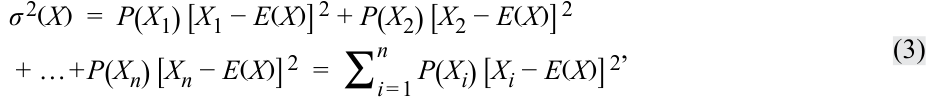
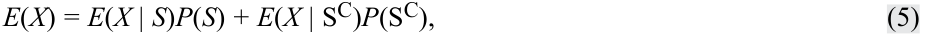
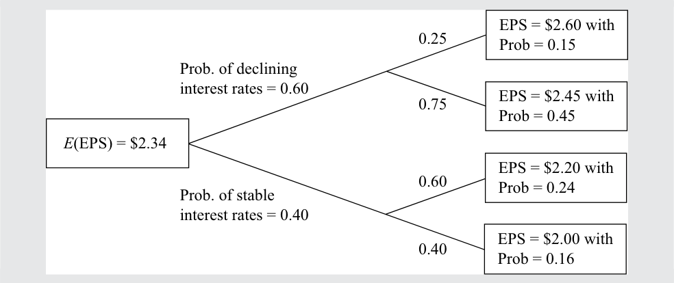
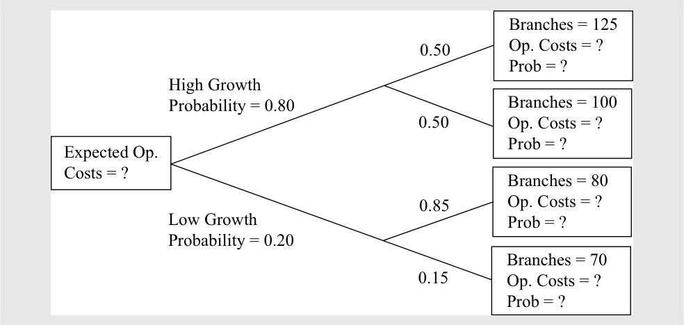

Learning Module 4 Probability Trees and Conditional Expectations - Part 1: Introduction
Volume 1: Quantitative Methods
Learning Module 4 Probability Trees and Conditional Expectations
Part 1/2: Introduction (PDF Pages 139–146)
Tập 1: Phương pháp Định lượng (Quantitative Methods)
Học phần 4: Cây Xác suất và Kỳ vọng Có điều kiện (Probability Trees and Conditional Expectations)
Phần 1/2: Giới thiệu (Trang PDF 139–146)
L E A R N I N G M O D U L E
H Ọ C P H Ầ N
4
4
Probability Trees and Conditional Expectations
Cây Xác suất và Kỳ vọng Có điều kiện (Probability Trees and Conditional Expectations)
by Richard A. DeFusco, PhD, CFA, Dennis W. McLeavey, DBA, CFA, Jerald E. Pinto, PhD, CFA, and David E. Runkle, PhD, CFA.
Tác giả: Richard A. DeFusco, PhD, CFA, Dennis W. McLeavey, DBA, CFA, Jerald E. Pinto, PhD, CFA, và David E. Runkle, PhD, CFA.
Richard A. DeFusco, PhD, CFA, is at the University of Nebraska-Lincoln (USA). Dennis W. McLeavey, DBA, CFA, is at the University of Rhode Island (USA). Jerald E. Pinto, PhD, CFA, is at CFA Institute (USA). David E. Runkle, PhD, CFA, is at Jacobs Levy Equity Management (USA).
Richard A. DeFusco, PhD, CFA, công tác tại Đại học Nebraska-Lincoln (Hoa Kỳ). Dennis W. McLeavey, DBA, CFA, công tác tại Đại học Rhode Island (Hoa Kỳ). Jerald E. Pinto, PhD, CFA, công tác tại Viện CFA (Hoa Kỳ). David E. Runkle, PhD, CFA, công tác tại Jacobs Levy Equity Management (Hoa Kỳ).
LEARNING OUTCOMES
MỤC TIÊU HỌC TẬP (LEARNING OUTCOMES)
Mastery The candidate should be able to:
Mức độ thành thạo — Ứng viên cần có khả năng:
- calculate expected values, variances, and standard deviations and demonstrate their application to investment problems formulate an investment problem as a probability tree and explain the use of conditional expectations in investment application calculate and interpret an updated probability in an investment setting using Bayes’ formula
- tính toán giá trị kỳ vọng (expected values), phương sai (variances), và độ lệch chuẩn (standard deviations) cũng như trình bày ứng dụng của chúng vào các bài toán đầu tư
- thiết lập một bài toán đầu tư dưới dạng cây xác suất (probability tree) và giải thích việc sử dụng các kỳ vọng có điều kiện (conditional expectations) trong ứng dụng đầu tư
- tính toán và diễn giải xác suất cập nhật (updated probability) trong bối cảnh đầu tư bằng cách sử dụng công thức Bayes (Bayes’ formula)
INTRODUCTION
GIỚI THIỆU (INTRODUCTION)
Investment decisions are made under uncertainty about the future direction of the economy, issuers, companies, and prices. This learning module presents probability tools that address many real-world problems involving uncertainty and applies to a variety of investment management applications.
Các quyết định đầu tư được đưa ra trong điều kiện không chắc chắn về hướng đi tương lai của nền kinh tế, các tổ chức phát hành, các công ty và giá cả. Học phần này trình bày các công cụ xác suất giúp giải quyết nhiều bài toán thực tế liên quan đến sự không chắc chắn và được áp dụng cho nhiều ứng dụng quản lý đầu tư đa dạng.
Lesson 1 introduces the calculation of the expected value, variance, and standard deviation for a random variable. These are essential quantitative concepts in investment management. Lesson 2 introduces probability trees that help in visualizing the conditional expectations and the total probabilities for expected value.
Bài học 1 giới thiệu cách tính giá trị kỳ vọng, phương sai và độ lệch chuẩn đối với một biến ngẫu nhiên. Đây là những khái niệm định lượng thiết yếu trong quản lý đầu tư. Bài học 2 giới thiệu cây xác suất giúp trực quan hóa các kỳ vọng có điều kiện và quy tắc xác suất toàn phần cho giá trị kỳ vọng.
When making investment decisions, analysts often rely on perspectives, which may be influenced by subsequent observations. Lesson 3 introduces Bayes’ formula, a rational method to adjust probabilities with the arrival of new information. This method has wide business and investment applications.
Khi đưa ra các quyết định đầu tư, các chuyên viên phân tích thường dựa vào các quan điểm nhìn nhận, vốn có thể chịu ảnh hưởng bởi các quan sát tiếp theo. Bài học 3 giới thiệu công thức Bayes, một phương pháp hợp lý để điều chỉnh các xác suất khi có thông tin mới xuất hiện. Phương pháp này có ứng dụng rộng rãi trong kinh doanh và đầu tư.
LEARNING MODULE OVERVIEW
TỔNG QUAN HỌC PHẦN (LEARNING MODULE OVERVIEW)
-
The expected value of a random variable is a probability-weighted average of the possible outcomes of the random variable. For a random variable X , the expected value of X is denoted E ( X ).
-
The variance of a random variable is the expected value (the probability-weighted average) of squared deviations from the random variable’s expected value E ( X ): σ2 ( X ) = E {[ X − E ( X )]2 }, where σ2 ( X ) stands for the variance of X .
-
Standard deviation is the positive square root of variance. Standard deviation measures dispersion (as does variance), but it is measured in the same units as the variable.
-
A probability tree is a means of illustrating the results of two or more independent events.
-
A probability of an event given (conditioned on) another event is a conditional probability. The probability of an event A given an event B is denoted P ( A | B ), and P ( A | B ) = P ( AB )/ P ( B ), P ( B ) ≠ 0.
-
According to the total probability rule, if S 1, S 2, …, Sn are mutually exclusive and exhaustive scenarios or events, then P ( A ) = P ( A | S 1) P ( S 1) + P ( A | S 2) P ( S 2) + … + P ( A | Sn ) P ( Sn ).
-
Conditional expected value is E ( X | S ) = P ( X 1 | S ) X 1 + P ( X 2 | S ) X 2 + … + P (Xn | S )Xn and has an associated conditional variance and conditional standard deviation.
-
Bayes’ formula is a method used to update probabilities based on new information.
-
Bayes’ formula is expressed as follows: Updated probability of event given the new information = [(Probability of the new information given event)/(Unconditional probability of the new information)] × Prior probability of event.
-
Giá trị kỳ vọng của một biến ngẫu nhiên (expected value of a random variable) là trung bình có trọng số xác suất của các kết quả có thể xảy ra của biến ngẫu nhiên đó. Đối với một biến ngẫu nhiên $X$, giá trị kỳ vọng của $X$ được ký hiệu là $E(X)$.
-
Phương sai của một biến ngẫu nhiên (variance of a random variable) là giá trị kỳ vọng (trung bình có trọng số xác suất) của các bình phương độ lệch so với giá trị kỳ vọng $E(X)$ của biến ngẫu nhiên đó: $\sigma^2(X) = E\{[X - E(X)]^2\}$, trong đó $\sigma^2(X)$ biểu thị phương sai của $X$.
-
Độ lệch chuẩn (standard deviation) là căn bậc hai dương của phương sai. Độ lệch chuẩn đo lường độ phân tán (giống như phương sai), nhưng được đo bằng cùng đơn vị với biến số đó.
-
Cây xác suất (probability tree) là một phương tiện minh họa kết quả của hai hay nhiều biến cố độc lập hoặc nối tiếp nhau.
-
Xác suất của một biến cố khi biết (với điều kiện) một biến cố khác là xác suất có điều kiện (conditional probability). Xác suất của một biến cố $A$ khi biết biến cố $B$ được ký hiệu là $P(A | B)$, và $P(A | B) = P(AB) / P(B)$, với $P(B) \ne 0$.
-
Theo quy tắc xác suất toàn phần (total probability rule), nếu $S_1, S_2, \dots, S_n$ là các kịch bản hoặc biến cố xung khắc và đầy đủ (mutually exclusive and exhaustive), thì $P(A) = P(A | S_1)P(S_1) + P(A | S_2)P(S_2) + \dots + P(A | S_n)P(S_n)$.
-
Giá trị kỳ vọng có điều kiện (conditional expected value) là $E(X | S) = P(X_1 | S)X_1 + P(X_2 | S)X_2 + \dots + P(X_n | S)X_n$ và có phương sai có điều kiện cũng như độ lệch chuẩn có điều kiện đi kèm.
-
Công thức Bayes (Bayes’ formula) là một phương pháp được sử dụng để cập nhật các xác suất dựa trên thông tin mới.
-
Công thức Bayes được biểu diễn như sau: Xác suất cập nhật của biến cố khi biết thông tin mới = [(Xác suất của thông tin mới khi biết biến cố) / (Xác suất vô điều kiện của thông tin mới)] $\times$ Xác suất tiên nghiệm của biến cố.
EXPECTED VALUE AND VARIANCE
GIÁ TRỊ KỲ VỌNG VÀ PHƯƠNG SAI (EXPECTED VALUE AND VARIANCE)
calculate expected values, variances, and standard deviations and demonstrate their application to investment problems
tính toán giá trị kỳ vọng, phương sai và độ lệch chuẩn cũng như trình bày ứng dụng của chúng vào các bài toán đầu tư
The expected value of a random variable is an essential quantitative concept in investments. Investors continually make use of expected values—in estimating the rewards of alternative investments, in forecasting earnings per share (EPS) and other corporate financial variables and ratios, and in assessing any other factor that may affect their financial position. The expected value of a random variable is the probability-weighted average of the possible outcomes of the random variable. For a random variable X , the expected value of X is denoted E ( X ).
Giá trị kỳ vọng của một biến ngẫu nhiên là một khái niệm định lượng thiết yếu trong đầu tư. Các nhà đầu tư liên tục sử dụng các giá trị kỳ vọng—trong việc ước tính phần thưởng của các khoản đầu tư thay thế, trong việc dự báo thu nhập trên mỗi cổ phần (EPS) cùng các biến số và tỷ số tài chính doanh nghiệp khác, cũng như trong việc đánh giá bất kỳ yếu tố nào khác có thể ảnh hưởng đến vị thế tài chính của họ. Giá trị kỳ vọng của một biến ngẫu nhiên (expected value of a random variable) là trung bình có trọng số xác suất của các kết quả có thể xảy ra của biến ngẫu nhiên đó. Đối với một biến ngẫu nhiên $X$, giá trị kỳ vọng của $X$ được ký hiệu là $E(X)$.
Expected value (e.g., expected stock return) looks either to the future, as a forecast, or to the “true” value of the mean (the population mean). We should distinguish expected value from the concepts of historical or sample mean. The sample mean also
Giá trị kỳ vọng (ví dụ: tỷ suất sinh lợi cổ phiếu kỳ vọng) hướng tới tương lai, như một dự báo, hoặc hướng tới giá trị “thực” của mức trung bình (trung bình tổng thể – population mean). Chúng ta cần phân biệt giá trị kỳ vọng với các khái niệm trung bình lịch sử hay trung bình mẫu (sample mean). Trung bình mẫu cũng
summarizes in a single number a central value. However, the sample mean presents a central value for a particular set of observations as an equally weighted average of those observations. In sum, the contrast is forecast versus historical, or population versus sample.
tóm tắt một giá trị trung tâm bằng một con số duy nhất. Tuy nhiên, trung bình mẫu trình bày một giá trị trung tâm cho một tập hợp các quan sát cụ thể dưới dạng trung bình có trọng số bằng nhau của các quan sát đó. Tóm lại, sự đối lập ở đây là giữa dự báo so với lịch sử, hay giữa tổng thể so với mẫu.
An equation that summarizes the calculation of the expected value for a discrete random variable X is as follows:
Phương trình tóm tắt cách tính giá trị kỳ vọng cho một biến ngẫu nhiên rời rạc (discrete random variable) $X$ như sau:

where Xi is one of n possible outcomes of the discrete random variable X .
trong đó $X_i$ là một trong $n$ kết quả có thể xảy ra của biến ngẫu nhiên rời rạc $X$.
The expected value is our forecast. Because we are discussing random quantities, we cannot count on an individual forecast being realized (although we hope that, on average, forecasts will be accurate). It is important, as a result, to measure the risk we face. Variance and standard deviation measure the dispersion of outcomes around the expected value or forecast.
Giá trị kỳ vọng chính là dự báo của chúng ta. Bởi vì chúng ta đang thảo luận về các đại lượng ngẫu nhiên, chúng ta không thể trông cậy vào việc một dự báo riêng lẻ sẽ trở thành hiện thực (mặc dù chúng ta hy vọng rằng, xét về trung bình, các dự báo sẽ chính xác). Do đó, điều quan trọng là phải đo lường rủi ro mà chúng ta phải đối mặt. Phương sai và độ lệch chuẩn đo lường độ phân tán của các kết quả xung quanh giá trị kỳ vọng hay dự báo.
The variance of a random variable is the expected value (the probability-weighted average) of squared deviations from the random variable’s expected value:
Phương sai của một biến ngẫu nhiên (variance of a random variable) là giá trị kỳ vọng (trung bình có trọng số xác suất) của các bình phương độ lệch so với giá trị kỳ vọng của biến ngẫu nhiên đó:

The two notations for variance are σ2 ( X ) and Var( X ).
Hai cách ký hiệu cho phương sai là $\sigma^2(X)$ và $\text{Var}(X)$.
Variance is a number greater than or equal to 0 because it is the sum of squared terms. If variance is 0, there is no dispersion or risk. The outcome is certain, and the quantity X is not random at all. Variance greater than 0 indicates dispersion of outcomes. Increasing variance indicates increasing dispersion, all else being equal.
Phương sai là một số lớn hơn hoặc bằng 0 vì nó là tổng của các số hạng bình phương. Nếu phương sai bằng 0, không có sự phân tán hay rủi ro nào cả. Kết quả là chắc chắn, và đại lượng $X$ hoàn toàn không phải là ngẫu nhiên. Phương sai lớn hơn 0 cho thấy có sự phân tán của các kết quả. Phương sai càng tăng cho thấy độ phân tán càng lớn, khi các yếu tố khác không đổi.
The following equation summarizes the calculation of variance:
Phương trình sau đây tóm tắt cách tính phương sai:

where Xi is one of n possible outcomes of the discrete random variable X .
trong đó $X_i$ là một trong $n$ kết quả có thể xảy ra của biến ngẫu nhiên rời rạc $X$.
Variance of X is a quantity in the squared units of X . For example, if the random variable is return in percent, variance of return is in units of percent squared. Standard deviation is easier to interpret than variance because it is in the same units as the random variable. Standard deviation is the square root of variance. If the random variable is return in percent, standard deviation of return is also in units of percent. In the following examples, when the variance of returns is stated as a percent or amount of money, to conserve space, we may suppress showing the unit squared.
Phương sai của $X$ là một đại lượng tính bằng đơn vị bình phương của $X$. Ví dụ, nếu biến ngẫu nhiên là tỷ suất sinh lợi tính bằng phần trăm, thì phương sai của tỷ suất sinh lợi có đơn vị là phần trăm bình phương. Độ lệch chuẩn dễ diễn giải hơn phương sai vì nó có cùng đơn vị với biến ngẫu nhiên. Độ lệch chuẩn (Standard deviation) là căn bậc hai của phương sai. Nếu biến ngẫu nhiên là tỷ suất sinh lợi tính bằng phần trăm, thì độ lệch chuẩn của tỷ suất sinh lợi cũng có đơn vị là phần trăm. Trong các ví dụ tiếp theo, khi phương sai của tỷ suất sinh lợi được nêu dưới dạng phần trăm hoặc số tiền, để tiết kiệm không gian trình bày, chúng ta có thể lược bỏ việc hiển thị đơn vị bình phương.
The best way to become familiar with these concepts is to work examples.
Cách tốt nhất để làm quen với các khái niệm này là thực hành qua các ví dụ.
EXAMPLE 1
VÍ DỤ 1
BankCorp’s Earnings per Share, Part 1
Thu nhập trên mỗi Cổ phần (EPS) của BankCorp, Phần 1 (BankCorp’s Earnings per Share, Part 1)
As part of your work as a banking industry analyst, you build models for forecasting earnings per share of the banks you cover. Today you are studying BankCorp. In Exhibit 1, you have recorded a probability distribution for BankCorp’s EPS for the current fiscal year.
Là một phần công việc của chuyên viên phân tích ngành ngân hàng, bạn xây dựng các mô hình dự báo thu nhập trên mỗi cổ phần (EPS) của các ngân hàng mà bạn phụ trách. Hôm nay bạn đang nghiên cứu BankCorp. Trong Bảng minh họa 1, bạn đã ghi lại một phân phối xác suất cho EPS của BankCorp trong năm tài chính hiện tại.
Exhibit 1: Probability Distribution for BankCorp’s EPS
Bảng minh họa 1: Phân phối Xác suất cho EPS của BankCorp (Probability Distribution for BankCorp’s EPS)
| Probability | EPS (USD) |
|---|---|
| 0.15 | 2.60 |
| 0.45 | 2.45 |
| 0.24 | 2.20 |
| Xác suất (Probability) | EPS (USD) |
|---|---|
| 0.15 | 2.60 |
| 0.45 | 2.45 |
| 0.24 | 2.20 |
| Probability | EPS (USD) |
|---|---|
| 0.16 | 2.00 |
| 1.00 |
| Xác suất (Probability) | EPS (USD) |
|---|---|
| 0.16 | 2.00 |
| 1.00 |
- What is the expected value of BankCorp’s EPS for the current fiscal year? Solution:
- Giá trị kỳ vọng của EPS của BankCorp cho năm tài chính hiện tại là bao nhiêu?
Following the definition of expected value, list each outcome, weight it by its probability, and sum the terms.
E (EPS) = 0.15(USD2.60) + 0.45(USD 2.45) + 0.24(USD 2.20) + 0.16(USD 2.00)
Lời giải:
- = USD2.3405
Theo định nghĩa về giá trị kỳ vọng, hãy liệt kê từng kết quả, nhân trọng số với xác suất của nó, và cộng các số hạng lại với nhau.
The expected value of EPS is USD2.34.
Giá trị kỳ vọng của EPS là USD 2.34.
- Using the probability distribution of EPS from Exhibit 1, you want to measure the dispersion around your forecast. What are the variance and standard deviation of BankCorp’s EPS for the current fiscal year?
- Sử dụng phân phối xác suất của EPS từ Bảng minh họa 1, bạn muốn đo lường độ phân tán xung quanh dự báo của mình. Phương sai và độ lệch chuẩn của EPS của BankCorp cho năm tài chính hiện tại là bao nhiêu?
Solution:
The order of calculation is always expected value, then variance, and then standard deviation. Expected value has already been calculated. Following the previous definition of variance, calculate the deviation of each outcome from the mean or expected value, square each deviation, weight (multiply) each squared deviation by its probability of occurrence, and then sum these terms.
Lời giải:
- σ2( EPS) = P( 2.60) [2.60 − E( EPS) ]2 + P( 2.45) [2.45 − E( EPS) ]2 + P( 2.20) [2.20 − E( EPS) ]2 + P( 2.00) [2.00 − E( EPS) ]2 = 0.15( 2.60 − 2.34)2 + 0.45( 2.45 − 2.34)2 + 0.24( 2.20 − 2.34)2 + 0.16( 2.00 − 2.34)2 = 0.01014 + 0.005445 + 0.004704 + 0.018496 = 0.038785
Thứ tự tính toán luôn là giá trị kỳ vọng trước, sau đó đến phương sai, rồi đến độ lệch chuẩn. Giá trị kỳ vọng đã được tính ở trên. Theo định nghĩa về phương sai trước đó, hãy tính độ lệch của từng kết quả so với giá trị trung bình hay giá trị kỳ vọng, bình phương từng độ lệch, nhân trọng số từng bình phương độ lệch với xác suất xảy ra của nó, và sau đó cộng các số hạng này lại.
Standard deviation is the positive square root of 0.038785:
Độ lệch chuẩn là căn bậc hai dương của 0.038785:
σ(EPS) = 0.0387851/2 = 0.196939, or approximately 0.20.
3
3
PROBABILITY TREES AND CONDITIONAL EXPECTATIONS
CÂY XÁC SUẤT VÀ KỲ VỌNG CÓ ĐIỀU KIỆN (PROBABILITY TREES AND CONDITIONAL EXPECTATIONS)
formulate an investment problem as a probability tree and explain the use of conditional expectations in investment application
thiết lập một bài toán đầu tư dưới dạng cây xác suất và giải thích việc sử dụng các kỳ vọng có điều kiện trong ứng dụng đầu tư
In investments, we make use of any relevant information available in making our forecasts. When we refine our expectations or forecasts, we are typically updating them based on new information or events; in these cases, we are using conditional expected values . The expected value of a random variable X given an event or scenario S is denoted E ( X | S ). Suppose the random variable X can take on any one of n distinct
Trong đầu tư, chúng ta tận dụng mọi thông tin có liên quan hiện có khi đưa ra dự báo. Khi tinh chỉnh các kỳ vọng hoặc dự báo của mình, chúng ta thường cập nhật chúng dựa trên thông tin hoặc biến cố mới; trong những trường hợp này, chúng ta đang sử dụng các giá trị kỳ vọng có điều kiện (conditional expected values). Giá trị kỳ vọng của một biến ngẫu nhiên $X$ khi biết một biến cố hoặc kịch bản $S$ được ký hiệu là $E(X | S)$. Giả sử biến ngẫu nhiên $X$ có thể nhận bất kỳ giá trị nào trong số $n$ kết quả riêng biệt
outcomes X 1, X 2, …, Xn (these outcomes form a set of mutually exclusive and exhaustive events). The expected value of X conditional on S is the first outcome, X 1, times the probability of the first outcome given S, P ( X 1 | S ), plus the second outcome, X 2, times the probability of the second outcome given S, P ( X 2 | S ), and so forth, as follows:
$X_1, X_2, \dots, X_n$ (các kết quả này tạo thành một tập hợp các biến cố xung khắc và đầy đủ). Giá trị kỳ vọng của $X$ với điều kiện $S$ bằng kết quả thứ nhất, $X_1$, nhân với xác suất của kết quả thứ nhất khi biết $S$, $P(X_1 | S)$, cộng với kết quả thứ hai, $X_2$, nhân với xác suất của kết quả thứ hai khi biết $S$, $P(X_2 | S)$, và cứ tiếp tục như vậy như sau:
E ( X | S ) = P ( X 1 | S ) X 1 + P ( X 2 | S ) X 2 + … + P (Xn | S )Xn. ~~(4)~~
We will illustrate this equation shortly.
Chúng ta sẽ minh họa phương trình này ngay sau đây.
Parallel to the total probability rule for stating unconditional probabilities in terms of conditional probabilities, there is a principle for stating (unconditional) expected values in terms of conditional expected values. This principle is the total probability rule for expected value .
Song song với quy tắc xác suất toàn phần dùng để biểu diễn các xác suất vô điều kiện theo các xác suất có điều kiện, có một nguyên lý dùng để biểu diễn các giá trị kỳ vọng (vô điều kiện) theo các giá trị kỳ vọng có điều kiện. Nguyên lý này là quy tắc xác suất toàn phần cho giá trị kỳ vọng (total probability rule for expected value).
Total Probability Rule for Expected Value
Quy tắc Xác suất Toàn phần cho Giá trị Kỳ vọng (Total Probability Rule for Expected Value)
The formula follows:
Công thức như sau:

where SC is the “complement of S,” which means event or scenario “S” does not occur. E ( X ) = E ( X | S 1) P ( S 1) + E ( X | S 2) P ( S 2) + … + E ( X | Sn) P (Sn), ~~(6)~~
trong đó $S^C$ là “phần bù của $S$” (complement of $S$), có nghĩa là biến cố hoặc kịch bản “$S$” không xảy ra.
trong đó $S_1, S_2, \dots, S_n$ là các kịch bản hoặc biến cố xung khắc và đầy đủ (mutually exclusive and exhaustive).
where S 1, S 2, …, Sn are mutually exclusive and exhaustive scenarios or events.
The general case, Equation 6, states that the expected value of X equals the expected value of X given Scenario 1, E ( X | S 1), times the probability of Scenario 1, P ( S 1), plus the expected value of X given Scenario 2, E ( X | S 2), times the probability of Scenario 2, P ( S 2), and so forth.
Trường hợp tổng quát, Phương trình 6, phát biểu rằng giá trị kỳ vọng của $X$ bằng giá trị kỳ vọng của $X$ khi biết Kịch bản 1, $E(X | S_1)$, nhân với xác suất của Kịch bản 1, $P(S_1)$, cộng với giá trị kỳ vọng của $X$ khi biết Kịch bản 2, $E(X | S_2)$, nhân với xác suất của Kịch bản 2, $P(S_2)$, và cứ tiếp tục như vậy.
To use this principle, we formulate mutually exclusive and exhaustive scenarios that are useful for understanding the outcomes of the random variable. This approach was employed in developing the probability distribution of BankCorp’s EPS in Example 1, as we now discuss.
Để sử dụng nguyên lý này, chúng ta xây dựng các kịch bản xung khắc và đầy đủ hữu ích cho việc tìm hiểu các kết quả của biến ngẫu nhiên. Cách tiếp cận này đã được áp dụng khi xây dựng phân phối xác suất cho EPS của BankCorp trong Ví dụ 1, như chúng ta sẽ thảo luận ngay bây giờ.
EXAMPLE 2
VÍ DỤ 2
BankCorp’s Earnings per Share, Part 2
Thu nhập trên mỗi Cổ phần (EPS) của BankCorp, Phần 2 (BankCorp’s Earnings per Share, Part 2)
The earnings of BankCorp are interest rate sensitive, benefiting from a declining interest rate environment. Suppose there is a 0.60 probability that BankCorp will operate in a declining interest rate environment in the current fiscal year and a 0.40 probability that it will operate in a stable interest rate environment (assessing the chance of an increasing interest rate environment as negligible). If a declining interest rate environment occurs, the probability that EPS will be USD2.60 is estimated at 0.25, and the probability that EPS will be USD2.45 is estimated at 0.75. Note that 0.60, the probability of declining interest rate environment, times 0.25, the probability of USD2.60 EPS given a declining interest rate environment, equals 0.15, the (unconditional) probability of USD2.60 given in the table in Exhibit 1. The probabilities are consistent. Also, 0.60(0.75) = 0.45, the probability of USD2.45 EPS given in Exhibit 1. The probability tree diagram in Exhibit 2 shows the rest of the analysis.
Thu nhập của BankCorp nhạy cảm với lãi suất, được hưởng lợi từ môi trường lãi suất giảm. Giả sử có xác suất 0.60 là BankCorp sẽ hoạt động trong môi trường lãi suất giảm (declining interest rate environment) trong năm tài chính hiện tại và xác suất 0.40 là ngân hàng sẽ hoạt động trong môi trường lãi suất ổn định (stable interest rate environment) (đánh giá khả năng xảy ra môi trường lãi suất tăng là không đáng kể). Nếu môi trường lãi suất giảm xảy ra, xác suất để EPS đạt USD 2.60 được ước tính là 0.25, và xác suất để EPS đạt USD 2.45 được ước tính là 0.75. Lưu ý rằng 0.60, xác suất của môi trường lãi suất giảm, nhân với 0.25, xác suất EPS đạt USD 2.60 khi biết môi trường lãi suất giảm, bằng 0.15, chính là xác suất (vô điều kiện) của mức USD 2.60 được cho trong bảng ở Bảng minh họa 1. Các xác suất này hoàn toàn nhất quán với nhau. Tương tự, $0.60(0.75) = 0.45$, chính là xác suất của mức EPS USD 2.45 được cho trong Bảng minh họa 1. Sơ đồ cây xác suất (probability tree diagram) trong Bảng minh họa 2 cho thấy phần còn lại của phân tích này.
Exhibit 2: BankCorp’s Forecasted EPS
Bảng minh họa 2: EPS Dự báo của BankCorp (BankCorp’s Forecasted EPS)

Chú thích hình ảnh: - Gốc cây: $E(\text{EPS}) = \$2.34$ - Nhánh trên: Xác suất lãi suất giảm (Prob. of declining interest rates) = 0.60: - Nhánh con 1 (0.25): $\text{EPS} = \$2.60$ với Xác suất (Prob) = 0.15 - Nhánh con 2 (0.75): $\text{EPS} = \$2.45$ với Xác suất (Prob) = 0.45 - Nhánh dưới: Xác suất lãi suất ổn định (Prob. of stable interest rates) = 0.40: - Nhánh con 1 (0.60): $\text{EPS} = \$2.20$ với Xác suất (Prob) = 0.24 - Nhánh con 2 (0.40): $\text{EPS} = \$2.00$ với Xác suất (Prob) = 0.16
A declining interest rate environment points us to the node of the tree that branches off into outcomes of USD2.60 and USD2.45. We can find expected EPS given a declining interest rate environment as follows, using Equation 6:
Môi trường lãi suất giảm dẫn chúng ta đến nút (node) của cây rẽ nhánh thành các kết quả USD 2.60 và USD 2.45. Chúng ta có thể tìm EPS kỳ vọng khi biết môi trường lãi suất giảm như sau, sử dụng Phương trình 4:
-
E (EPS | declining interest rate environment )
-
= 0.25(USD2.60) + 0.75(USD2.45)
-
= USD2.4875
If interest rates are stable,
Nếu lãi suất ổn định,
E (EPS | stable interest rate environment ) = 0.60(USD2.20) + 0.40(USD2.00)
- = USD2.12
Ví dụ, một khi chúng ta có thông tin mới rằng lãi suất ổn định, chúng ta sẽ điều chỉnh giảm kỳ vọng ban đầu về EPS từ USD 2.34 xuống còn USD 2.12. Bây giờ, sử dụng quy tắc xác suất toàn phần cho giá trị kỳ vọng:
Once we have the new piece of information that interest rates are stable, for example, we revise our original expectation of EPS from USD2.34 downward to USD2.12. Now using the total probability rule for expected value,
E( EPS)
= E (EPS | declining interest rate environment) P(declining interest rate environment) + E (EPS | stable interest rate environment) P(stable interest rate environment)
Do đó, $E(\text{EPS}) = \text{USD } 2.4875(0.60) + \text{USD } 2.12(0.40) = \text{USD } 2.3405$ hay khoảng USD 2.34.
So, E (EPS) = USD2.4875(0.60) + USD2.12(0.40) = USD2.3405 or about USD2.34.
Con số này hoàn toàn trùng khớp với ước lượng giá trị kỳ vọng của EPS được tính trực tiếp từ phân phối xác suất trong Ví dụ 1. Cũng giống như các xác suất của chúng ta phải nhất quán, các giá trị kỳ vọng vô điều kiện và có điều kiện của chúng ta cũng phải nhất quán; nếu không, các hành động đầu tư của chúng ta có thể tạo ra cơ hội kiếm lời cho các nhà đầu tư khác mà phần thiệt thuộc về chúng ta.
This amount is identical to the estimate of the expected value of EPS calculated directly from the probability distribution in Example 1. Just as our probabilities must be consistent, so too must our expected values, unconditional and conditional, be consistent; otherwise, our investment actions may create profit opportunities for other investors at our expense.
Để ôn lại, trước tiên chúng ta đã xây dựng các yếu tố hoặc kịch bản ảnh hưởng đến kết quả của biến cố đang quan tâm. Sau khi gán xác suất cho các kịch bản này, chúng ta hình thành các kỳ vọng có điều kiện dựa trên các kịch bản khác nhau đó. Sau đó, chúng ta tính ngược lại để thiết lập một giá trị kỳ vọng tại thời điểm ngày hôm nay. Trong bài toán vừa giải quyết, EPS là biến cố được quan tâm, và môi trường lãi suất là yếu tố ảnh hưởng đến EPS.
To review, we first developed the factors or scenarios that influence the outcome of the event of interest. After assigning probabilities to these scenarios, we formed expectations conditioned on the different scenarios. Then we worked backward to formulate an expected value as of today. In the problem just worked, EPS was the event of interest, and the interest rate environment was the factor influencing EPS.
Chúng ta cũng có thể tính phương sai của EPS khi biết từng kịch bản:
We can also calculate the variance of EPS given each scenario:
-
σ2 (EPS| declining interest rate environment )
-
= P (USD2.60| declining interest rate environment )
-
× [USD2.60 − E (EPS| declining interest rate environment )]2
-
- P (USD2.45| declining interest rate environment )
-
× [USD2.45 − E (EPS| declining interest rate environment )]2
-
= 0.25(USD2.60 − USD2.4875)2 + 0.75(USD2.45 − USD2.4875)2 = 0.004219
Similarly, σ2 (EPS | stable interest rate environment ) is found to be equal to
Tương tự, $\sigma^2(\text{EPS} | \text{môi trường lãi suất ổn định})$ được tìm thấy bằng:
- = 0.60(USD2.20 − USD2.12)2 + 0.40(USD2.00 − USD2.12)2 = 0.0096
These are conditional variances , the variance of EPS given a declining interest rate environment and the variance of EPS given a stable interest rate environment . The relationship between unconditional variance and conditional variance is a relatively advanced topic. The main points are that (1) variance, like expected value, has a conditional counterpart to the unconditional concept; and (2) we can use conditional variance to assess risk given a particular scenario.
Đây là các phương sai có điều kiện (conditional variances), tức phương sai của EPS khi biết môi trường lãi suất giảm và phương sai của EPS khi biết môi trường lãi suất ổn định. Mối quan hệ giữa phương sai vô điều kiện và phương sai có điều kiện là một chủ đề tương đối nâng cao. Những điểm chính cần nắm là: (1) phương sai, giống như giá trị kỳ vọng, có một khái niệm có điều kiện tương ứng với khái niệm vô điều kiện; và (2) chúng ta có thể sử dụng phương sai có điều kiện để đánh giá rủi ro khi biết một kịch bản cụ thể.
EXAMPLE 3
VÍ DỤ 3
BankCorp’s Earnings per Share, Part 3
Thu nhập trên mỗi Cổ phần (EPS) của BankCorp, Phần 3 (BankCorp’s Earnings per Share, Part 3)
Continuing with the BankCorp example, you focus now on BankCorp’s cost structure. One model, a simple linear regression model, you are researching for BankCorp’s operating costs is
Tiếp tục với ví dụ về BankCorp, bây giờ bạn tập trung vào cơ cấu chi phí của BankCorp. Một mô hình—mô hình hồi quy tuyến tính đơn giản (simple linear regression model)—mà bạn đang nghiên cứu cho chi phí hoạt động của BankCorp là:
- Yˆ = a + bX ,
where Yˆ is a forecast of operating costs in millions of US dollars and X is the number of branch offices; and Yˆ represents the expected value of Y given X , or E ( Y | X ). You interpret the intercept a as fixed costs and b as variable costs. You estimate the equation as follows:
trong đó $\hat{Y}$ là dự báo chi phí hoạt động tính bằng triệu đô la Mỹ và $X$ là số lượng chi nhánh; và $\hat{Y}$ đại diện cho giá trị kỳ vọng của $Y$ khi biết $X$, hay $E(Y | X)$. Bạn diễn giải hệ số chặn $a$ là chi phí cố định (fixed costs) và $b$ là chi phí biến đổi (variable costs). Bạn ước lượng phương trình như sau:
Yˆ = 12.5 + 0.65 X .
BankCorp currently has 66 branch offices, and the equation estimates operating costs as 12.5 + 0.65(66) = USD55.4 million. You have two scenarios for growth, pictured in the tree diagram in Exhibit 3.
BankCorp hiện có 66 chi nhánh, và phương trình ước tính chi phí hoạt động là $12.5 + 0.65(66) = \text{USD } 55.4\text{ triệu}$. Bạn có hai kịch bản tăng trưởng, được mô tả trong sơ đồ cây ở Bảng minh họa 3.
Exhibit 3: BankCorp’s Forecasted Operating Costs
Bảng minh họa 3: Chi phí Hoạt động Dự báo của BankCorp (BankCorp’s Forecasted Operating Costs)

Chú thích hình ảnh: - Gốc cây: Chi phí hoạt động kỳ vọng (Expected Op. Costs) = ? - Nhánh trên: Tăng trưởng cao (High Growth), Xác suất = 0.80: - Nhánh con 1 (0.50): Số chi nhánh (Branches) = 125, Chi phí hoạt động = ?, Xác suất = ? - Nhánh con 2 (0.50): Số chi nhánh (Branches) = 100, Chi phí hoạt động = ?, Xác suất = ? - Nhánh dưới: Tăng trưởng thấp (Low Growth), Xác suất = 0.20: - Nhánh con 1 (0.85): Số chi nhánh (Branches) = 80, Chi phí hoạt động = ?, Xác suất = ? - Nhánh con 2 (0.15): Số chi nhánh (Branches) = 70, Chi phí hoạt động = ?, Xác suất = ?
- Compute the forecasted operating costs given the different levels of operating costs, using Yˆ = 12.5 + 0.65 X . State the probability of each level of the number of branch offices. These are the answers to the questions in the terminal boxes of the tree diagram.
- Tính chi phí hoạt động dự báo ứng với các mức số lượng chi nhánh khác nhau, sử dụng $\hat{Y} = 12.5 + 0.65X$. Nêu xác suất của từng mức số lượng chi nhánh. Đây là câu trả lời cho các dấu hỏi trong các ô cuối của sơ đồ cây.
Solution:
Lời giải:
Using Yˆ = 12.5 + 0.65 X , from top to bottom, we have
Sử dụng $\hat{Y} = 12.5 + 0.65X$, từ trên xuống dưới, chúng ta có:
| Operating Costs | Probability |
|---|---|
| ˆ Y= 12.5 + 0.65(125) = USD93.75 million |
0.80(0.50) = 0.40 |
| ˆ Y= 12.5 + 0.65(100) = USD77.50 million |
0.80(0.50) = 0.40 |
| ˆ Y= 12.5 + 0.65(80) = USD64.50 million |
0.20(0.85) = 0.17 |
| ˆ Y= 12.5 + 0.65(70) = USD58.00 million |
0.20(0.15) = 0.03 |
| Sum = 1.00 |
| Chi phí hoạt động (Operating Costs) | Xác suất (Probability) |
|---|---|
| $\hat{Y} = 12.5 + 0.65(125) = \text{USD } 93.75\text{ triệu}$ | $0.80(0.50) = 0.40$ |
| $\hat{Y} = 12.5 + 0.65(100) = \text{USD } 77.50\text{ triệu}$ | $0.80(0.50) = 0.40$ |
| $\hat{Y} = 12.5 + 0.65(80) = \text{USD } 64.50\text{ triệu}$ | $0.20(0.85) = 0.17$ |
| $\hat{Y} = 12.5 + 0.65(70) = \text{USD } 58.00\text{ triệu}$ | $0.20(0.15) = 0.03$ |
| Tổng (Sum) = 1.00 |
- Compute the expected value of operating costs under the high growth scenario. Also calculate the expected value of operating costs under the low growth scenario.
- Solution:
- Tính giá trị kỳ vọng của chi phí hoạt động theo kịch bản tăng trưởng cao. Đồng thời tính giá trị kỳ vọng của chi phí hoạt động theo kịch bản tăng trưởng thấp.
- Lời giải:
US dollar amounts are in millions.
-
E(operating costs| high growth ) = 0.50(USD93.75) + 0.50(USD77.50)
-
= USD85.625
Số tiền đô la Mỹ được tính bằng đơn vị triệu.
E(operating costs| low growth ) = 0.85(USD64.50) + 0.15(USD58.00) = USD63.525
- Tham chiếu câu hỏi trong ô đầu tiên của sơ đồ cây: Chi phí hoạt động kỳ vọng của BankCorp là bao nhiêu?
- Lời giải:
- Refer to the question in the initial box of the tree: What are BankCorp’s expected operating costs?
- Solution:
Số tiền đô la Mỹ được tính bằng đơn vị triệu.
US dollar amounts are in millions.
-
E (operating costs) = E (operating costs| high growth ) P ( high growth )
-
- E (operatingcosts| low growth ) P ( low growth )
-
= 85.625(0.80) + 63.525(0.20) = 81.205
-
BankCorp’s expected operating costs are USD81.205 million.
Chi phí hoạt động kỳ vọng của BankCorp là USD 81.205 triệu.
In this section, we have treated random variables, such as EPS, as standalone quantities. We have not explored how descriptors, such as expected value and variance of EPS, may be functions of other random variables. Portfolio return is one random variable that is clearly a function of other random variables, the random returns on the individual securities in the portfolio. To analyze a portfolio’s expected return and variance of return, we must understand that these quantities are a function of characteristics of the individual securities’ returns. Looking at the variance of portfolio return, we see that the way individual security returns move together or covary is key. We cover portfolio expected return, variance of return, and importantly, covariance and correlation in a separate learning module.
Trong phần này, chúng ta đã xem xét các biến ngẫu nhiên, chẳng hạn như EPS, như những đại lượng độc lập. Chúng ta chưa khám phá cách các tham số mô tả, chẳng hạn như giá trị kỳ vọng và phương sai của EPS, có thể là hàm số của các biến ngẫu nhiên khác. Tỷ suất sinh lợi của danh mục đầu tư là một biến ngẫu nhiên rõ ràng là một hàm số của các biến ngẫu nhiên khác—tức tỷ suất sinh lợi ngẫu nhiên của từng chứng khoán riêng lẻ trong danh mục. Để phân tích tỷ suất sinh lợi kỳ vọng và phương sai tỷ suất sinh lợi của một danh mục đầu tư, chúng ta phải hiểu rằng các đại lượng này là một hàm số của các đặc tính tỷ suất sinh lợi của từng chứng khoán riêng lẻ. Nhìn vào phương sai của tỷ suất sinh lợi danh mục đầu tư, chúng ta thấy rằng cách thức tỷ suất sinh lợi của các chứng khoán riêng lẻ biến động cùng nhau hay đồng biến thiên (covary) là yếu tố then chốt. Chúng ta sẽ tìm hiểu về tỷ suất sinh lợi kỳ vọng của danh mục, phương sai tỷ suất sinh lợi, và quan trọng là hiệp phương sai và hệ số tương quan trong một học phần riêng.
QUESTION SET
BỘ CÂU HỎI (QUESTION SET)
- Suppose the prospects for recovering principal for a defaulted bond issue depend on which of two economic scenarios prevails. Scenario 1 has probability 0.75 and will result in recovery of USD0.90 per USD1 principal value with probability 0.45, or in recovery of USD0.80 per USD1
- Giả sử triển vọng thu hồi vốn gốc đối với một đợt phát hành trái phiếu bị vỡ nợ phụ thuộc vào việc kịch bản nào trong hai kịch bản kinh tế sẽ diễn ra. Kịch bản 1 có xác suất 0.75 và sẽ dẫn đến việc thu hồi được USD 0.90 trên mỗi USD 1 giá trị vốn gốc với xác suất 0.45, hoặc thu hồi được USD 0.80 trên mỗi USD 1